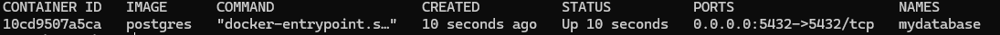
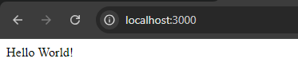
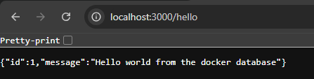

Connect a Database Docker Container with a Node.js App Container
Introduction
When you have two Docker containers, one runs a database, and the other runs an application that needs to be connected to the database. You can’t connect it using the localhost address even if both Dockers run on the same machine. That is because each container has its own file system, network capabilities, and so on. Therefore, if you refer to localhost, it will search within the container (Which can’t be found).
The short answer is that both containers should be running on the same Docker network, and use the name of the database container as your HOST connection inside the app.
The rest of this blog is an example of how to do it.
Note: If the database is running on your machine (Not a Docker container), you can use
host.docker.internalas theHOSTof your connection and you don’t need to read this blog.
Pre-requisites
I have created a small project which you can clone from GitHub, and test the method.
The project is a simple Express.js API connected to a database.
Clone the project:
git clone https://github.com/AzaKamala/docker-app-example.git
Prepare The Docker Images
Database Docker Image
The docker image is ready for PostgreSQL, you just need to pull the image.
docker pull postgres
Application Docker Image
Make sure you are in the project you just pulled using the terminal. Then, you need to create the docker image using the following command:
docker build -t docker-app-example .
Run The Docker Containers
Database Docker Container
Run the following command to run the docker container:
docker run -d --name mydatabase -p 5432:5432 -e POSTGRES_PASSWORD=[yourpassword] postgres
To check if the container is running run this command:
docker ps

After this, you need to create the database, so run this command to access the PostgreSQL container:
docker exec -it mydatabase psql -U postgres
then, create the database:
CREATE DATABASE docker_app_example;
Application Docker Container
Before you run the container, make sure to add the environment variables (In a .env file) inside the source code of the project according to the .env.example. However, one of the important parts of this process is the name of the host inside of the .env. We will assign the database container name mydatabase to the HOST variable.
DB_NAME=docker_app_example
DB_HOST=mydatabase
DB_USER=postgres
DB_PASSWORD=[The password you set for your database]
After adding the environment variables, we can run the image on a container using the environment variable we created.
docker run --name api-docker-app -p 3000:3000 --env-file .env docker-app-example
The
.envfile is in the directory that I am running this command, if yours is in another directory, you need to specify the location.
Prepare The Docker Network
In this section where we are doing the magic. For the app container to access the database container, we need to create a Docker network and add them both to it. Once they are both in the same network the app can access the database across the containers.
First, let's create a network.
docker network create my-network
Then, we add the containers.
docker network connect my-network mydatabase
docker network connect my-network api-docker-app
Now, we can check the network to see if both containers have been added.
docker network inspect my-network
Testing The Results
Before we check if it is working we need to run the database migration and the seeding. To do that, we need to access the api-docker-app container.
docker exec -it api-docker-app bash
After that, we run the migration and the seeding.
knex migrate:latest
knex seed:run
Now let's see if it is working. we go to http://localhost:3000.

For the moment of truth, we visit http://localhost:3000/hello.

Conclusion
I know this took very long. However, based on this Stack Overflow question's comments, it is easier using Docker Compose.